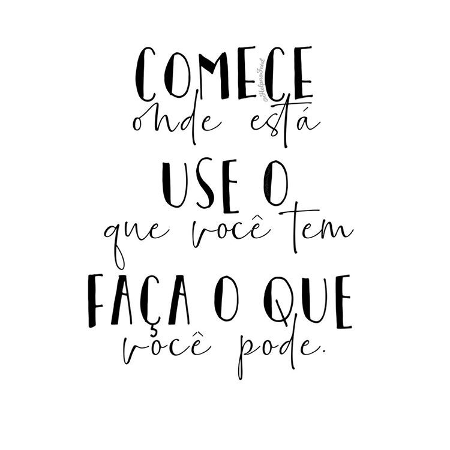

O que é insegurança?Insegurança é um sentimento mal-estar geral ou nervosismo que pode ser desencadeado pela percepção de si mesmo ser vulnerável de alguma forma, ou um senso de incapacidade ou instabilidade que ameaça a própria autoimagem ou ego.

O que é uma pessoa insegura?Insegurança surge de uma dúvida constante em relação a si mesmo, sobre suas capacidades e competências. É um estado emocional de inferioridade, que faz a pessoa sentir que não é boa o suficiente para realizar determinada tarefa ou para ser amado, aceito ou reconhecido.
Exemplos de insegurançaA insegurança sempre traz consigo um medo, por exemplo, medo de se expor em público, medo do que os outros pensam a seu respeito, medo de ser rejeitado, medo de ficar sozinho, medo de que algo dê errado, medo de que o chefe não goste do seu trabalho, medo de errar, etc.
Quais os sintomas da insegurança?Necessidade excessiva de mostrar certa superioridade, mesmo quando mentalmente não se sentem assim;
Demonstração de muita segurança ao exibirem suas conquistas, até de forma exagerada e repetitiva;
Medo incontrolável de arriscar algo ou um contato com alguém; Falta de capacidade de negar.
Quais os tipos de insegurança?1- Não conseguir tomar decisões;2 – Viver procurando a aprovação dos outros;3 – Criar a necessidade de trabalhar duas vezes;4 – Não ter autonomia;5 – Demonstrar medo sempre;6 – Não pedir ajuda;7 – Evitar discussões por medo de passar vergonha.
Como indentificar suas inseguranças?É importante fazer uma avaliação sobre você a respeito do que pode acontecer caso você enfrente tais situações. Esse processo requer sinceridade de sua parte. E preciso que você reconheça a Insegurança emocional que possui. Quais são as questões da sua vida que mais causam esse sentimento angustiante? Em que momentos ele ocorre? O que isso tem a dizer sobre você.